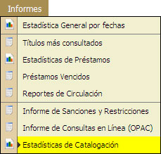
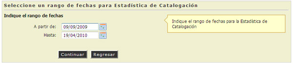
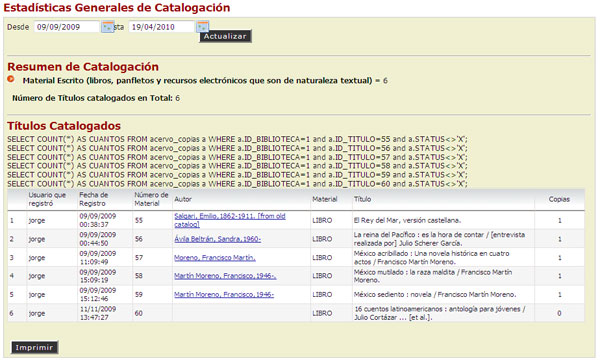

4.8. Estadística de Catalogación
En esta opción el Administrador del Sistema podrá Consultar e Imprimir una Estadística, la cual contendrá la Información de Títulos Catalogados en el Sistema.
REQUISITO: El usuario administrativo deberá contar con los suficientes privilegios para realizar esta consulta.

- Escribir o Seleccionar el rango de fechas para realizar la consulta.
- Hcer "Clic" en la opción [Continuar].

- El sistema mostrará un Informe completo del rango de fechas que se seleccionó para la consulta.
- Se mostrará el Usuario que Registró, Fecha de Registro, Autor, Material, Título y el Número de Copias.
- Si se desea imprimir el reporte de la consulta, hacer "clic" en la opción [Imprimir], "seleccionar" la impresora.

- Si se desea actualizar la consulta, seleccionar el nuevo rango de fechas, hacer "clic" en la opción [Actualizar].
- El sistema mostrará los nuevos resultados.